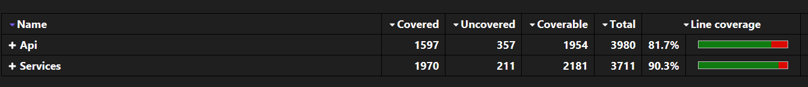

Testing Strategy
Overview
Vinnare follows a robust and maintainable testing strategy that prioritizes clarity, coverage, and reliability. We aim for consistent practices across all layers, from controllers to services, with a strong emphasis on isolating logic through mocking and in-memory databases.
Current test coverage exceeds 85% 
Testing Principles
Isolation
Each test runs in isolation without side effects. This is achieved through:
-
Mocking interfaces like
ITokenService,IUserService, orILogger<T>to focus only on the logic under test. -
In-memory databases (via
TestDbContextFactory) for integration-like service tests without external dependencies.
Repeatability
Tests can be run multiple times with consistent results. All state is reset per test through fresh DB context instances and mock setups.
Expressive Assertions
Each test clearly communicates intent through structured Arrange-Act-Assert blocks, using:
-
Assert.IsType<>to verify response types. -
Assert.Equal,Assert.Null, orAssert.NotNullto validate output data. -
Assert.ThrowsAsync<ExceptionType>to enforce failure expectations.
Controller Tests
Controller-level tests validate HTTP logic and error handling using mocked services. Key patterns include:
-
Simulated requests with DTOs to mirror real-world usage.
-
Mocked dependencies to ensure controller logic is verified independently of service implementations.
-
Exception validation, asserting that proper exceptions are thrown for invalid input or unauthorized access.
These ensure that endpoints behave as expected for both success and failure paths.
Service Tests
Service logic is tested using real EF Core contexts configured with the TestDbContextFactory. This allows us to:
-
Verify CRUD operations on in-memory data.
-
Simulate more realistic flows (e.g., cart manipulation, product lookup).
-
Confirm DB-side behavior like relationships and cascade deletions.
Each service test focuses on real usage scenarios and data consistency.
Test Utilities
TestDbContextFactory
public static VinnareDbContext Create()
{
var options = new DbContextOptionsBuilder<VinnareDbContext>()
.UseInMemoryDatabase(databaseName: $"TestDb_{Guid.NewGuid()}")
.Options;
var context = new VinnareDbContext(options);
context.Database.EnsureCreated();
return context;
}
This static utility provides clean, isolated VinnareDbContext instances backed by in-memory databases with unique names per test run. It ensures:
-
No state leakage between tests.
-
DB behavior remains testable without a real server.
-
Data setup is fast and reliable.
Best Practices
-
Keep test files named consistently with the class under test (e.g.,
AuthController_test.cs,CartService_test.cs). -
Place tests next to the logic they validate for improved maintainability.
-
Mock only what is needed — let EF and data models behave naturally where it adds value.
-
Avoid over-testing simple mappings or trivial getters/setters.
-
Focus on behavior, not implementation.